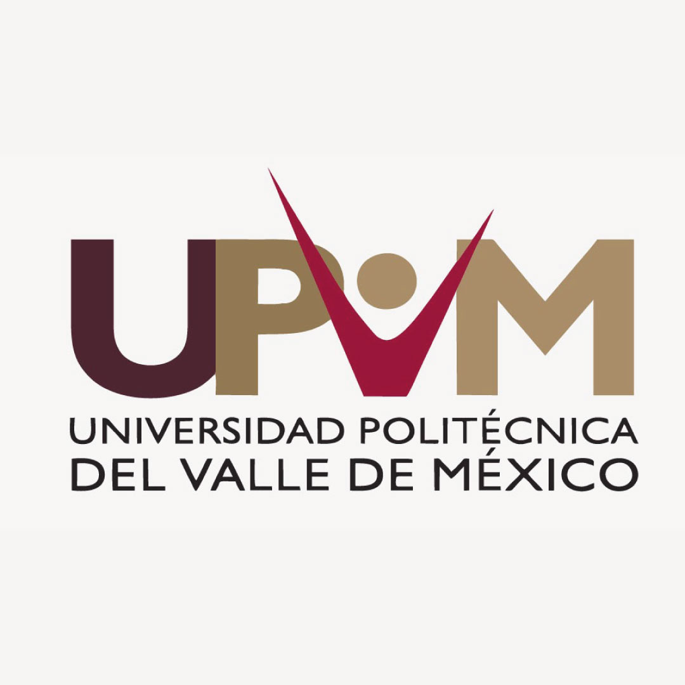

Universidad Politécnica del Valle de México (UPVM)
Comprometida con el desarrollo comunitario y la economía social en allianza con la Universidad Politecnica de Atlacomulco

Vinculación comunitaria en Jiquipilco: una colaboración interinstitucional transformadora
En 2024, la Universidad Politécnica del Valle de México (UPVM) se integró activamente al NODESS EDCESS, gracias a la invitación de la Universidad Politécnica de Atlacomulco (UPA), con quien se consolidó una alianza estratégica orientada al fortalecimiento del desarrollo territorial y la economía social. Esta colaboración fue posible gracias a la gestión de la Dra. Sandra Blas Yáñez investigadora de la UPA, quien promovió la participación de la UPVM en esta importante iniciativa.
Como parte de esta vinculación, el equipo de investigadores de la UPVM de la carrera de Ingeniería en Informática participó en una misión de trabajo comunitario en el municipio de Jiquipilco, Estado de México, realizando diversas actividades orientadas a la identificación de necesidades y el diseño de soluciones tecnológicas con impacto social: Visita de campo y entrevistas con productores locales, en particular del sector pulquero, para conocer sus procesos, identificar desafíos tecnológicos y explorar oportunidades de digitalización y visibilidad comercial.
Impartición de dos conferencias especializadas dirigidas a productores, estudiantes y público general: Estrategias Digitales de Prestadores de Servicios Turísticos para Impulsar la Economía Social y Solidarua, impartida por la Dra. Nancy Patricia Flores Azcanio.
Ciberseguridad en el Turismo Social: Protegiendo la Economía Solidaria y el Desarrollo Comunitario, a cargo del Dr. Hugo Ortiz Quiroga.
En una visita a la Senda del Pulque propiedad del productor Venustiano Castillo Rafael dio autorización para realizar un Levantamiento fotográfico y documental en su hacienda de Maguey Pulquero, realizado en colaboración directa con la Universidad Politécnica de Atlacomulco, el cual sirvió como base para el diseño del recorrido virtual interactivo “Senda del Pulque”.
Durante la visita a la hacienda donde se diseñó el recorrido virtual “Senda del Pulque”, el equipo tuvo la oportunidad de dialogar con uno de los productores rurales locales, quien compartió de manera generosa la historia de vida que dio origen a su labor con el maguey. Nos relató cómo, movido por el deseo de preservar las tradiciones de su comunidad y recuperar prácticas ancestrales, comenzó a cultivar esta planta sagrada, enfrentando retos climáticos, económicos y culturales. Su conexión con la tierra y el respeto por los saberes transmitidos por generaciones lo llevaron a especializarse en la extracción del aguamiel y la producción de pulque artesanal, convirtiéndose no solo en un guardián del patrimonio biocultural, sino también en un agente clave del desarrollo rural.
Este testimonio se convirtió en un eje narrativo esencial para la construcción del recorrido virtual, permitiendo que la experiencia digital no solo muestre los espacios físicos de producción, sino que transmita la memoria viva y el valor simbólico del maguey como identidad y sustento de la comunidad.

Como parte del trabajo de campo realizado en Jiquipilco, y en colaboración con la Universidad Politécnica de Atlacomulco, se llevó a cabo un levantamiento fotográfico y documental en la hacienda de un productor pulquero, con el objetivo de desarrollar un recorrido virtual interactivo titulado “Senda del Pulque”. Este recorrido busca difundir el patrimonio cultural, productivo y turístico del maguey y sus derivados, promoviendo el turismo rural y fortaleciendo la identidad local a través de una experiencia inmersiva accesible en línea.

https://proyectosva.com.mx/RVSP/
Formación académica basada en proyectos reales
Las experiencias recogidas en Jiquipilco se trasladaron al aula, fomentando el pensamiento crítico, la creatividad y la innovación entre los estudiantes de ingeniería. En distintas asignaturas se desarrollaron los siguientes proyectos y publicaciones:
Asignaturas: Programación Móvil y Sistemas Inteligentes
- Experiencia culinaria a través de una aplicación móvil en comunidades rurales.
- Solución móvil para el seguimiento del tratamiento médico en comunidades rurales.
- Plataforma web para la comercialización de productos locales.
- Plataforma web para la promoción de recorridos turísticos y productos derivados del maguey: Caso Tinacal Tejocote.
Estadías Profesionales
- Desarrollo de una Plataforma Web para la Difusión y Comercialización de Productos Rurales “Pulcata”
- Creación de una Plataforma Web para Impulsar la Comercialización de Productores Rurales: Caso Penca Aguamielera
- Gestión y Herramientas para el Cultivo en Casa
- Adaptación de Técnicas de Cultivo Tradicionales en Entornos Urbanos
- Desarrollo de una Aplicación Móvil enfocada en el cultivo y uso de plantas medicinales y aromáticas en casa
Participación en eventos académicos y de innovación
- Ponencias en el Coloquio Nacional de Ciencia Abierta, disponibles en el canal: YouTube MenteSTEM
- Participación en el reto de economía social en el HackUPVMChallenge: HackUPVMChallenge
- Publicación de proyectos estudiantiles en el canal de divulgación científica juvenil: Canal de divulgación
Proyectos con enfoque en mujeres STEM
En el contexto del compromiso del NODESS EDCESS con la equidad y el empoderamiento de mujeres jóvenes en STEM, la Dra. Nancy Patricia Flores Azcanio mentoreó a seis alumnas en el marco del Primer Congreso Nacional de Mujeres como Mentoras en la Ciencia y en Emprendimiento Tecnológico. Este acompañamiento dio como resultado la presentación de proyectos con impacto social, ambiental y tecnológico, destacando el trabajo con comunidades rurales. Entre ellos:
Experiencia culinaria a través de una aplicación móvil en comunidades ruralesUna app móvil para preservar recetas tradicionales, fomentar el patrimonio culinario y estimular la economía local.
Autora: Cristina Olinkan Zavala VillafrancaPlataforma móvil para la educación y concientización sobre sostenibilidad ambiental
Una plataforma móvil para sensibilizar sobre cambio climático y prácticas sostenibles, con contenido interactivo y seguimiento personalizado.
Autora: Irma Guadalupe De Ita FonsecaPlataforma web para la comercialización de productos locales impulso al comercio circular
Una plataforma web para que productores rurales comercialicen localmente y reutilicen recursos
Autora: Alejandra Yoselin Mejía LópezPlataforma Web para la Promoción de Recorridos Turísticos y Productos Derivados del Maguey: Caso Tinacal Tejocote
Un sitio web para la Asociación Tinacal Tejocote, promoviendo el turismo rural, el pulque y productos derivados
Autora: Valeria Yoana Buenaventura HernándezPromoción de la salud mental y resiliencia estudiantil
Página web con recursos y herramientas para fortalecer la salud mental y la resiliencia estudiantil.
Autora: Diana Belén Vázquez CuéllarSolución móvil para el seguimiento del tratamiento médico en comunidades rurales
Aplicación móvil para recordar tratamientos, brindar información médica y operar sin conexión.
Autora: Estefanny Sánchez ColioImpacto en la formación del recurso humano
La participación de la UPVM en el NODESS EDCESS, particularmente en el proyecto desarrollado en Jiquipilco, tuvo un impacto significativo en la formación del recurso humano universitario, al involucrar directamente a dos estudiantes de ingeniería en Tecnologías de la Información durante sus estadías profesionales. Los estudiantes, asesorados por los investigadores, tuvieron la oportunidad de aplicar sus conocimientos en contextos reales, desarrollando soluciones tecnológicas con sentido social y pertinencia territorial.
El trabajo colaborativo con productores rurales les permitió fortalecer competencias clave como el pensamiento crítico, la innovación social, el trabajo colaborativo interdisciplinario y la sensibilidad comunitaria. Los resultados de sus proyectos fueron documentados como artículos académicos, y presentados públicamente a través de la revista digital MenteSTEM y el canal de divulgación científica juvenil STEM Para Todos, lo cual les brindó visibilidad y reconocimiento en entornos académicos y sociales más amplios.
Esta experiencia no solo consolidó su formación técnica, sino que también les permitió comprender el valor transformador de la tecnología cuando se orienta al desarrollo sostenible, la identidad cultural y la economía social comunitaria.
Esta experiencia consolidó no solo el compromiso de la UPVM con las comunidades rurales, sino también la relevancia de la cooperación interinstitucional para generar soluciones innovadoras que conectan la academia con la realidad social.
Impacto del NODESS en la formación profesional
En el marco del trabajo de campo realizado en Jiquipilco, y en colaboración con la Universidad Politécnica de Atlacomulco, se llevó a cabo un levantamiento fotográfico, entrevistas y documentación audiovisual en la hacienda de un productor pulquero, con el propósito de diseñar un recorrido virtual interactivo titulado “Senda del Pulque”. Este proyecto no solo representa una estrategia innovadora de difusión cultural y turística, sino que fortalece el vínculo entre el conocimiento académico y las necesidades reales de las comunidades rurales.
Desde la perspectiva de la investigación, el recorrido virtual abre una nueva línea de estudio en torno a las tecnologías inmersivas aplicadas al desarrollo territorial, la digitalización del patrimonio y el turismo sustentable. En el ámbito de la docencia, ha permitido incorporar problemas reales al aula, impulsando proyectos estudiantiles multidisciplinarios con impacto social, fomentando el pensamiento crítico, el aprendizaje basado en proyectos y la formación en tecnologías emergentes.
Para la comunidad rural, esta herramienta se traduce en una plataforma de visibilidad y promoción de sus saberes, productos y servicios, contribuyendo a su autonomía productiva y al fortalecimiento de su identidad cultural. Finalmente, el recorrido simboliza un ejemplo tangible de colaboración efectiva entre instituciones de educación superior, demostrando cómo la alianza NODESS EDCESS articula esfuerzos para impulsar la innovación, el desarrollo local y la economía social a través de la tecnología.